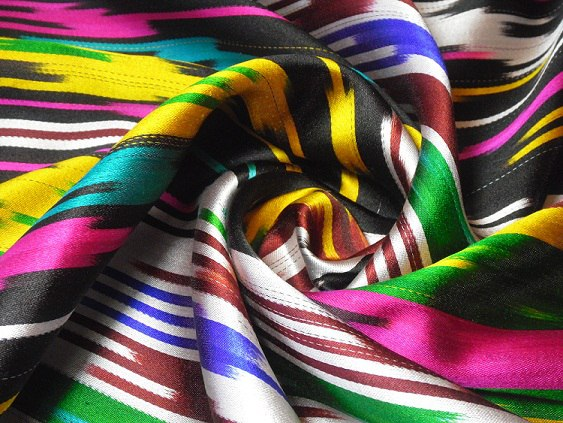
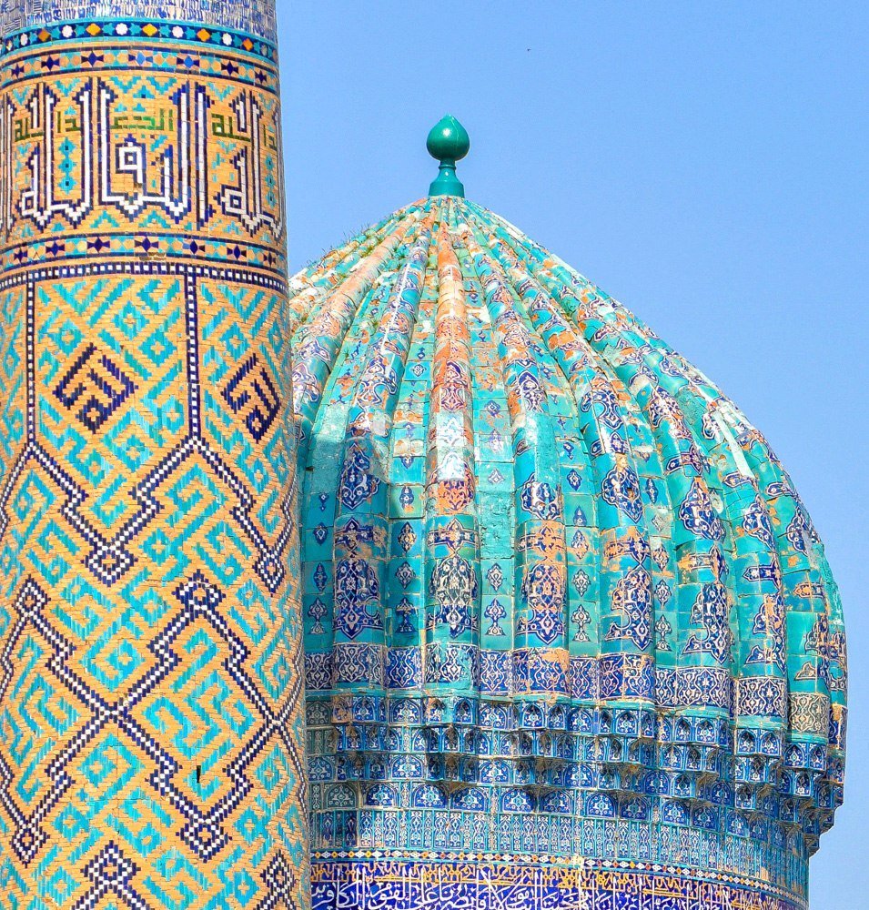
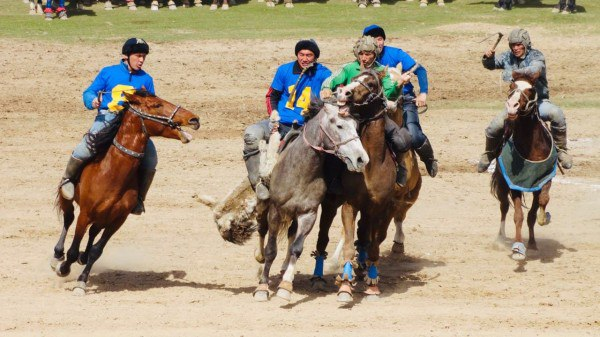
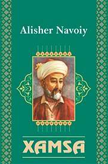
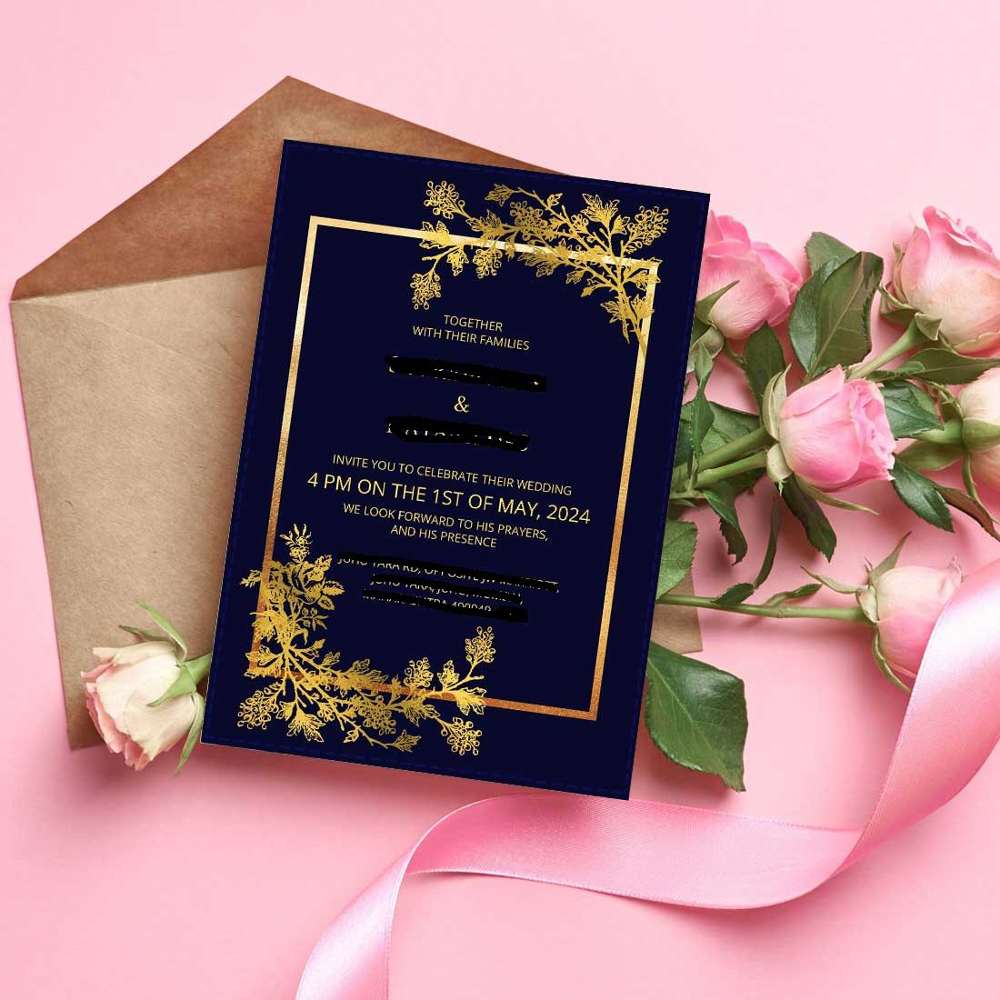
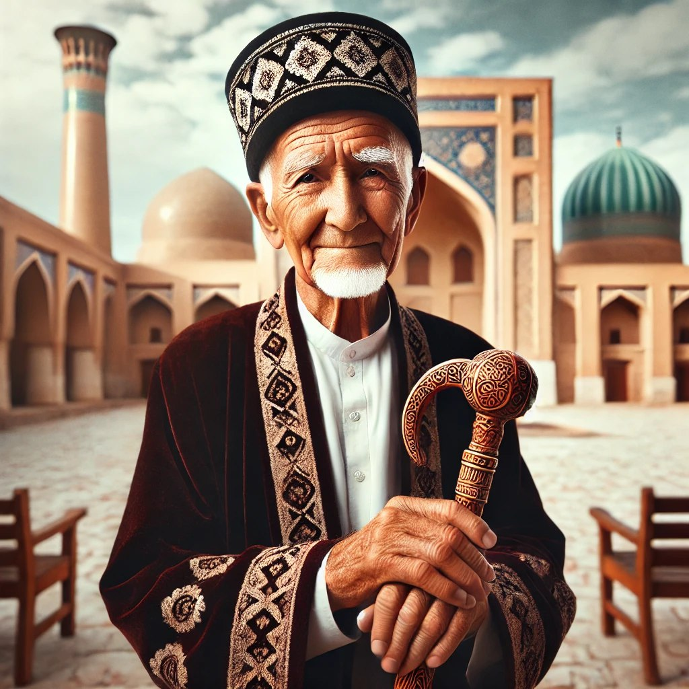
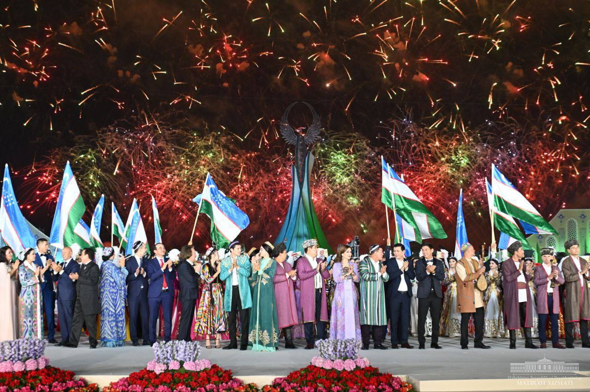
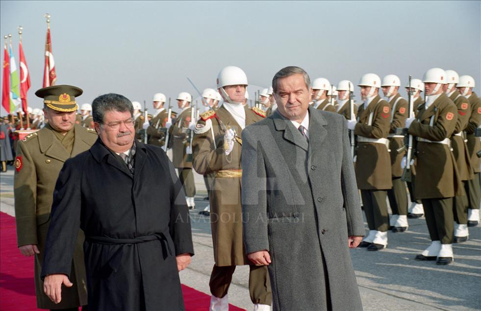
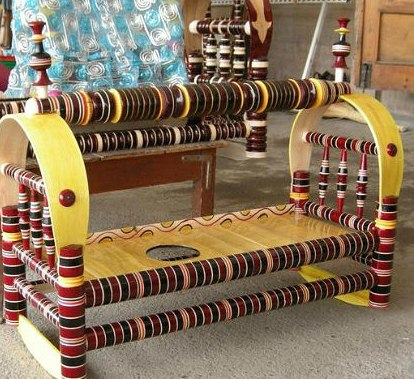

Fashion
Atlas Fabric
The traditional Uzbek silk material Atlas exists in bold colors while featuring distinctive designs that serve to create dresses and scarves. Through its rich historical evolution during the Silk Road era this textile continues to inspire contemporary Uzbek fashion classics. People often choose Atlas for cultural festivals as well as weddings and national holidays.

Art
Hand-Painted Mosaics
Uzbekistan become renowned for their vibrant mosques and madrasas and palaces which decorate Samarkand along with Bukhara and Khiva. These custom tiles display Uzbek carpentry skills which retain traditional Islamic decorative traditions dating back hundreds of years.

Leisure
Kupkari (Uloq)
Players in Kupkari execute traditional horseback competition to secure goat carcasses while carrying them to the finishing line. The game of Kupkari appears during Navruz and other significant festivals to represent multiple aspects of Uzbekistan’s heritage anchored in nomadic ancient era martial practices.

Literature
Xamsa by Alisher Navoiy
The five epic poems in "Xamsa" represent Alisher Navoiy's literary masterpiece which establed him as Uzbekistan's greatest literary figure. The work expresses Uzbek literary achievements combined with deep cultural traditions through its Chagatai Turkic language.

Customs
Wedding Invitations
Uzbek wedding celebrations extend over a large scale because hundreds of invitees participate. The traditional invitations of Uzbek weddings demonstrate how deeply Uzbek society values its families alongside community bond and open-hearted welcome. The invitation contents include poetic blessings alongside traditional cultural aspects expressed through design and wording format.

Behavior
Kaltak (Walking Stick)
Society in Uzbekistan maintains respect as an ingrained cultural norm toward elders. Senior Uzbek men commonly carry a_symbol of wisdom called the kaltak which represents their authority. The walking stick becomes a symbol which recalls both the Uzbek model of "ustoz-shogird" mentoring and the enduring sense of family importance within Uzbek civilization.

Demonstrations
Independence Day
Independence Day in Uzbekistan takes place on September 1 bringing together citizens for mass demonstrations alongside parades and fireworks displays. National pride combined with patriotism and progress since 1991 shine through the banners and posters which emerge from Independence Day celebrations.

Politics and Politicians
Islam Karimov and World Leaders
Uzbekistan gained independence in 1991, and Turkey was the first country to recognize it as a sovereign state. Diplomatic letters between Islam Karimov and Turkish leaders mark the beginning of Uzbekistan’s international relations and political development.

Unique
Traditional Beshik (Cradle)
In Uzbek families the Beshik serves as a traditional baby cradle made from wood. In Uzbek parenting traditions the Beshik stands as an essential item which provides comfort and better sleep for newborn babies. The Beshik symbolizes both Uzbekistan's traditional strong family structure along with its ancient approaches to childcare.
